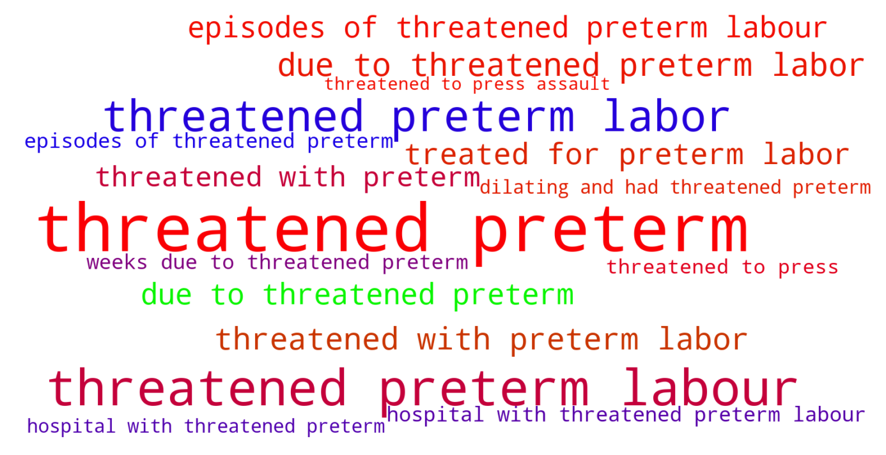
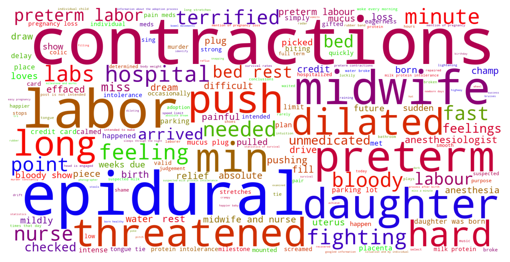

Jump to section:
Samples from Social CorpusHits per UMLS Alias on Social Corpus
Word Cloud Comparison
Embedding Space Comparison
Nearest Neighbors by Semantic Type
Related Analysed Concepts
Samples from Social Corpus
I'm 34 + 2 today , had a few episodes of threatened preterm labour at around 30 weeks .
Confidence: 0.770. Reddit link
My midwife checked me every week from then on ( my first daughter I had preterm contractions / threatened preterm later as well , then she was born at 38w2d after I was on bed rest from 33-37 weeks ) .
Confidence: 0.866. Reddit link
Now the other moms are looking at me like I'm raising Jeffrey Dahmer , one even threatened to press assault charge ( not that they would stick , but still ) and I have no idea how to stop him .
Confidence: 0.542. Reddit link
I had threatened preterm labour at 30 weeks was 70 % effaced and 2 cm dilated , spent 10 days in hospital .
Confidence: 0.898. Reddit link
While it was by no means a smooth , easy pregnancy ( I was hospitalized for 8 weeks due to threatened preterm labor ) , my daughter was born healthy and ( barely ) full term .
Confidence: 0.926. Reddit link
My last day of work is tomorrow because since week 30 I've been threatened with preterm labor and I was put on work restriction .
Confidence: 0.872. Reddit link
At 33 weeks , I had started dilating and had threatened preterm labor .
Confidence: 1.000. Reddit link
On this day two years ago , I was in the hospital with threatened preterm labour ... I got to learn the ever so fun statistics of survival rates of a 24 week preemie ( luckily I never had to find out for myself ) .
Confidence: 0.719. Reddit link
I was treated for preterm labor at 30 weeks .
Confidence: 0.802. Reddit link
Hits per UMLS Alias on Social Corpus
-
threatened preterm labor
24 hits
-
threatened premature labour
0 hits
-
threatened premature labor
0 hits
Word Cloud Comparison
Keywords matching C0473390
Keywords matched against concept. Word size represents frequency.
Keywords co-occurring with C0473390
Co-occurrence is measured at the document-level (i.e. Reddit submissions). Frequencies are normalized to account for keywords common to all CUIs.
Embedding Space Comparison
T-SNE comparison for word embeddings learned from medical domain (EuroPMC) and social media (Reddit) independently.
Pearson correlation for union of closest 1000 neighbors: 0.133
Nearest Neighbors by Semantic Type
Most similar concepts in each of the selected UMLS semantic types. Based on concept embeddings from social corpus.
T046 (Pathologic Function)
-
C0473390
Threatened preterm labor
1.000 Similarity
-
C0152155
Labor threatened
0.879 Similarity
-
C0000821
Threatened miscarriage
0.811 Similarity
-
C0022876
Early labor
0.755 Similarity
-
C0085598
False labor
0.749 Similarity
-
C0233084
Arrest labor
0.707 Similarity
-
C0151526
Pre term
0.692 Similarity
-
C0269810
Sepsis during labor
0.671 Similarity
T079 (Temporal Concept)
-
C2964377
Preterm time
0.725 Similarity
-
C0022872
Second stage labour
0.593 Similarity
-
C0022871
Labor first stage
0.591 Similarity
-
C0237477
Arresting
0.572 Similarity
-
C0443252
Long term
0.540 Similarity
-
C3853132
Several times day
0.527 Similarity
-
C1301931
Death time
0.522 Similarity
-
C3489408
Hospital stay
0.519 Similarity
T184 (Sign or Symptom)
-
C2735340
Preterm labor symptoms
0.697 Similarity
-
C3494359
Prodromal state
0.623 Similarity
-
C0565619
Fetal distress labor
0.622 Similarity
-
C3494358
Prodromal sign
0.605 Similarity
-
C2985299
Impending labor
0.559 Similarity
-
C1301639
Pain during labor delivery
0.554 Similarity
-
C0231243
Complications early
0.550 Similarity
-
C3494360
Period prodromal
0.547 Similarity
T047 (Disease or Syndrome)
-
C0473498
Ruptured uterus before labor
0.663 Similarity
-
C0948664
Imminent abortion
0.634 Similarity
-
C0340464
Extrasystoles
0.632 Similarity
-
C0231341
Aging premature
0.630 Similarity
-
C0018790
Arrested
0.594 Similarity
-
C0025322
Early menopause
0.580 Similarity
-
C0000814
Missed miscarriage
0.580 Similarity
-
C0149958
Cps
0.572 Similarity
T100 (Age Group)
-
C4048294
Preterm baby
0.662 Similarity
-
C3494262
Extremely preterm infant
0.549 Similarity
-
C4551581
Full term baby
0.468 Similarity
-
C3825962
Middle aged women
0.376 Similarity
-
C2827631
School age child
0.376 Similarity
-
C1444711
Preteen
0.361 Similarity
-
C0680085
Early adulthood
0.361 Similarity
-
C0008059
Child
0.354 Similarity
T060 (Diagnostic Procedure)
-
C0040862
Labor trial
0.632 Similarity
-
C0033053
Prenatal diagnoses
0.547 Similarity
-
C1578855
Monitoring labor
0.545 Similarity
-
C4733122
Told fmri
0.527 Similarity
-
C0596473
Detection early
0.501 Similarity
-
C0195324
Cone biopsy
0.495 Similarity
-
C0200068
Contractions stress test
0.491 Similarity
-
C0199637
Heart rate monitoring
0.488 Similarity
T101 (Patient or Disabled Group)
-
C0008098
Child hospitalized
0.622 Similarity
-
C0871503
Dying patients
0.550 Similarity
-
C0021562
Inpatient
0.528 Similarity
-
C0086807
Physically disabled
0.494 Similarity
-
C1516213
Cancer patient
0.493 Similarity
-
C0233363
Monoamniotic twins
0.491 Similarity
-
C1516231
Cancer survivor
0.474 Similarity
-
C0018576
Disabled
0.474 Similarity
T037 (Injury or Poisoning)
-
C3203359
Ruptures
0.613 Similarity
-
C0269858
Traumatic lesion during delivery
0.564 Similarity
-
C0417108
Jump from burning hospital
0.537 Similarity
-
C1959898
Traumatic injury during pregnancy
0.536 Similarity
-
C0026771
Wound multiple
0.531 Similarity
-
C0016655
Fractures multiple
0.524 Similarity
-
C0005604
Traumatic birth
0.515 Similarity
-
C1621955
Physical abuse
0.513 Similarity
T048 (Mental or Behavioral Dysfunction)
-
C0338927
Hospitalism
0.574 Similarity
-
C0038436
Ptsd
0.567 Similarity
-
C0232600
Making self sick
0.547 Similarity
-
C0563172
Dangerous plans
0.538 Similarity
-
C0522187
Fear childbirth
0.532 Similarity
-
C0036857
Severe mental handicap
0.531 Similarity
-
C0233403
Physically well but worried
0.511 Similarity
-
C0013146
Abuse
0.506 Similarity
T201 (Clinical Attribute)
-
C0566679
Length labor
0.572 Similarity
-
C0032930
Trigger
0.522 Similarity
-
C1301668
Delivery time
0.505 Similarity
-
C1286057
Completeness placenta
0.487 Similarity
-
C1286282
Birth outcomes
0.480 Similarity
-
C0442709
End diastolic
0.477 Similarity
-
C1285995
Measure uterine contractions
0.476 Similarity
-
C0233131
Intensity uterine contraction
0.475 Similarity
T061 (Therapeutic or Preventive Procedure)
-
C0404370
Delivery after coming head
0.549 Similarity
-
C0392535
Pregnancy termination
0.548 Similarity
-
C0269439
Abortion elective
0.537 Similarity
-
C3146282
Medical termination pregnancy
0.531 Similarity
-
C0269704
Spontaneous vaginal breech birth
0.531 Similarity
-
C0200066
Medical induction labor
0.530 Similarity
-
C0677962
Total hysterectomy
0.530 Similarity
-
C0404381
Delivery placenta
0.529 Similarity
T059 (Laboratory Procedure)
-
C0005729
Bleeding time
0.533 Similarity
-
C1295143
Fetal fibronectin test
0.505 Similarity
-
C0368930
Clotting time
0.505 Similarity
-
C0023901
Liver tests
0.472 Similarity
-
C0545131
Cbc diff
0.462 Similarity
-
C0850355
Pregnancy blood test
0.458 Similarity
-
C0032181
Platelet count
0.454 Similarity
-
C0005771
Blood cell count
0.450 Similarity
T031 (Body Substance)
-
C0392908
Secretion vaginal
0.532 Similarity
-
C1446336
Multiple plaques
0.473 Similarity
-
C3496630
Swab from uterus
0.467 Similarity
-
C3532405
Swab from placenta
0.462 Similarity
-
C0439057
Early morning urine
0.434 Similarity
-
C0002638
Amniotic fluid
0.433 Similarity
-
C0242216
Gall stones
0.429 Similarity
-
C0007806
Spinal fluid
0.420 Similarity
T049 (Cell or Molecular Dysfunction)
-
C4725191
Stop lost
0.531 Similarity
-
C0544885
Stop gain
0.435 Similarity
-
C0002938
Aneuploidy
0.387 Similarity
-
C1705285
Mutated
0.346 Similarity
-
C0008625
Chromosomal abnormality
0.346 Similarity
-
C0041107
Trisomy
0.339 Similarity
-
C0008628
Del
0.337 Similarity
-
C4725190
Start lost
0.306 Similarity
T005 (Virus)
-
C3743464
Mycobacteriophage whirlwind
0.522 Similarity
-
C4415400
Phage wrath
0.476 Similarity
-
C3768023
Mycobacteriophage conspiracy
0.462 Similarity
-
C5058350
Fairfax lookout virus
0.459 Similarity
-
C3949524
Mischivirus
0.454 Similarity
-
C1220459
Hart park group
0.452 Similarity
-
C4433204
King virus
0.431 Similarity
-
C0206419
Coronavirus
0.417 Similarity
T019 (Congenital Abnormality)
-
C0266393
Uterus didelphys
0.518 Similarity
-
C0266387
Bicornuate uterus
0.510 Similarity
-
C0266389
Unicornuate uterus
0.509 Similarity
-
C0152240
Septate uterus
0.500 Similarity
-
C0266383
Abnormality uterus
0.488 Similarity
-
C0432185
Absent muscles since birth
0.449 Similarity
-
C0266294
Kidney single
0.448 Similarity
-
C0000768
Birth defect
0.446 Similarity
T067 (Phenomenon or Process)
-
C0023983
Long term effects
0.516 Similarity
-
C0013956
Emergency
0.491 Similarity
-
C2986841
Binding potential
0.472 Similarity
-
C0677038
Increase pressure
0.443 Similarity
-
C0221190
Physical contact
0.441 Similarity
-
C0035020
Relapse
0.426 Similarity
-
C0337240
Fall while being carried
0.425 Similarity
-
C0034897
Recurring
0.412 Similarity
T042 (Organ or Tissue Function)
-
C0019116
Stopping bleeding
0.514 Similarity
-
C0042130
Uterine contractions
0.496 Similarity
-
C0005778
Clotting
0.487 Similarity
-
C0234108
Summation
0.484 Similarity
-
C2753527
Heart induction
0.482 Similarity
-
C0027045
Heart beating
0.480 Similarity
-
C0232102
Blood fluidity
0.472 Similarity
-
C1325917
Organ induction
0.458 Similarity
T023 (Body Part, Organ, or Organ Component)
-
C1514389
Pregnant uterus
0.513 Similarity
-
C0042149
Uterus
0.507 Similarity
-
C1268155
Placenta part
0.491 Similarity
-
C0227828
Cervix wall
0.490 Similarity
-
C0007874
Cervix
0.490 Similarity
-
C0545792
Kidney liver
0.468 Similarity
-
C0226378
Uterine artery
0.467 Similarity
-
C0501817
First cervical nerve
0.466 Similarity
T034 (Laboratory or Test Result)
-
C2266672
Clotting time finding
0.510 Similarity
-
C0427777
Pregnancy results tests
0.492 Similarity
-
C0240802
Positive pregnancy test
0.472 Similarity
-
C0425986
Pregnant blood test confirms
0.455 Similarity
-
C0427780
Negative pregnancy test
0.453 Similarity
-
C0428255
Lead levels
0.450 Similarity
-
C0588465
Sperm forward progression
0.446 Similarity
-
C5201036
Low platelets
0.442 Similarity
T190 (Anatomical Abnormality)
-
C0269852
Previa vasa
0.502 Similarity
-
C3887590
Stricture ureter
0.494 Similarity
-
C0269185
Tipped uterus
0.462 Similarity
-
C1265602
Multiple masses
0.453 Similarity
-
C4732742
Hole center heart
0.441 Similarity
-
C0149952
Ovary torsion
0.424 Similarity
-
C0009918
Contraction joint
0.419 Similarity
-
C4476975
T shaped uterus
0.415 Similarity
T041 (Mental Process)
-
C0015726
Scared
0.502 Similarity
-
C0677838
Grief loss
0.467 Similarity
-
C0392348
Ideation
0.463 Similarity
-
C0524369
Mid life crisis
0.460 Similarity
-
C0039869
Thought
0.449 Similarity
-
C0564404
Stressed out
0.449 Similarity
-
C0424157
Fear going crazy
0.448 Similarity
-
C0005119
Bereavement
0.442 Similarity
T054 (Social Behavior)
-
C0034668
Raped
0.501 Similarity
-
C0680012
Infidelity
0.471 Similarity
-
C0422386
Patient suing doctor finding
0.471 Similarity
-
C1948146
Physically emotionally abusive partner
0.459 Similarity
-
C0679997
Premarital sex
0.457 Similarity
-
C0019421
Straight
0.456 Similarity
-
C1261512
Attack
0.452 Similarity
-
C0556482
Sex unprotected
0.451 Similarity
T200 (Clinical Drug)
-
C3216620
Progesterone vaginal product
0.493 Similarity
-
C1247687
Progesterone suppositories vaginal
0.468 Similarity
-
C3218395
Papain pill
0.458 Similarity
-
C5222490
Progesterone injection
0.438 Similarity
-
C0307304
Pitocin injection
0.400 Similarity
-
C1247002
Misoprostol oral tablet
0.390 Similarity
-
C1163679
Injections sterile water
0.361 Similarity
-
C4048176
Oxytocin injection
0.357 Similarity
T032 (Organism Attribute)
-
C0805393
Breathing spontaneous
0.488 Similarity
-
C0017504
Gestational age
0.480 Similarity
-
C3714565
Physical condition
0.470 Similarity
-
C0598779
Life history
0.452 Similarity
-
C1954788
Gestational age weeks
0.419 Similarity
-
C4086849
Sex at birth
0.396 Similarity
-
C2362326
Sexual health
0.384 Similarity
-
C0557155
Life event
0.382 Similarity
T018 (Embryonic Structure)
-
C0015935
Fetal heart
0.471 Similarity
-
C1278988
Entire placenta
0.470 Similarity
-
C0032043
Placenta
0.468 Similarity
-
C0008503
Chorionic
0.460 Similarity
-
C0008508
Chorionic villi
0.448 Similarity
-
C0553522
Cord placenta umbilical
0.439 Similarity
-
C0440731
Fetal brain
0.431 Similarity
-
C0015965
Fetal
0.430 Similarity
T074 (Medical Device)
-
C0013962
Emergency medical tag
0.469 Similarity
-
C0593622
Home pregnancy test
0.462 Similarity
-
C0179650
Crash cart
0.461 Similarity
-
C1875469
Med pass
0.458 Similarity
-
C3878737
Uternine contraction monitor internal
0.450 Similarity
-
C0180236
Curetting
0.448 Similarity
-
C0180647
Internal fetal heart rate monitoring
0.442 Similarity
-
C0085104
System
0.439 Similarity
T039 (Physiologic Function)
-
C0599423
Joint stress
0.464 Similarity
-
C0149784
Reaction stress
0.464 Similarity
-
C0026820
Muscle contraction
0.420 Similarity
-
C0162537
Impedance
0.409 Similarity
-
C2256369
Heart process
0.405 Similarity
-
C0743925
Fetal growth
0.392 Similarity
-
C0025320
Change
0.389 Similarity
-
C2756020
Signal release
0.388 Similarity
T044 (Molecular Function)
-
C1721104
Breaks dna
0.436 Similarity
-
C1149397
Heartless ligand
0.435 Similarity
-
C1152025
Docs
0.410 Similarity
-
C0301647
Strand breaks
0.372 Similarity
-
C0887940
Gene arrangements
0.370 Similarity
-
C1150342
Dopachrome rearranging enzyme
0.358 Similarity
-
C1749457
Ligands activity
0.355 Similarity
-
C1149528
Wishful thinking binding
0.352 Similarity
T195 (Antibiotic)
-
C0718950
Biomox
0.431 Similarity
-
C0723285
Septa
0.418 Similarity
-
C0003232
Antibiotics
0.363 Similarity
-
C0310367
Today
0.320 Similarity
-
C0718575
Antibiotics ear
0.305 Similarity
-
C0013090
Doxycycline
0.260 Similarity
-
C0002645
Amoxicillin
0.257 Similarity
-
C0030842
Penicillin
0.246 Similarity
T007 (Bacterium)
-
C0018154
Gram positive bacteria
0.407 Similarity
-
C0022828
L forms
0.399 Similarity
-
C4169658
Convivina
0.389 Similarity
-
C0995648
Genus quinella
0.378 Similarity
-
C0036111
Salmonella
0.342 Similarity
-
C0995705
Frankia
0.342 Similarity
-
C0579233
Group b strep
0.330 Similarity
-
C3137302
Brownia
0.321 Similarity